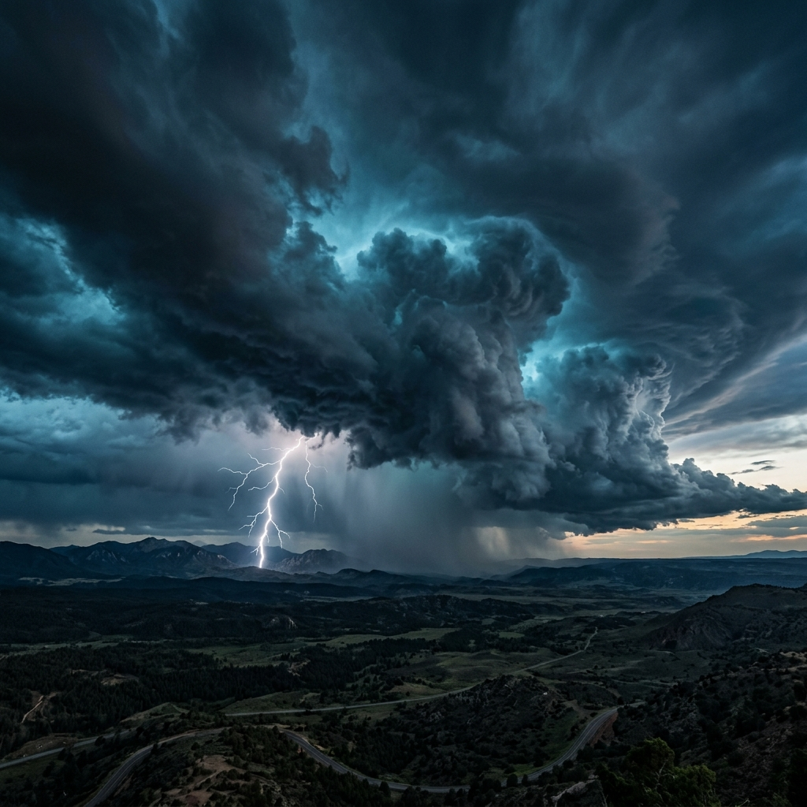
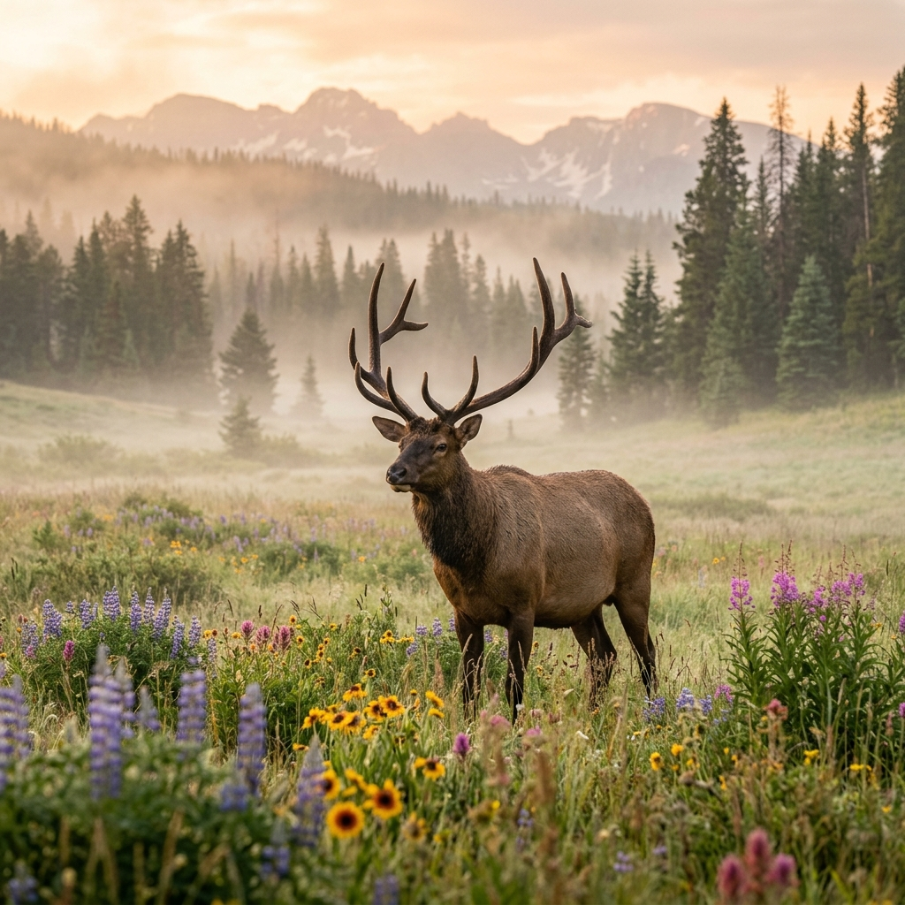

How It Works
Verdara Ultra reads the outdoors like a living system
01
4 Primitives
Every outdoor environment reduces to four irreducible flows: Terrain, Weather, Environmental, and Biological. These are the four axes of the engine.
02
42 Nodes
Each flow decomposes into 10-11 measurable nodes (elevation, wind speed, wildlife density, etc.) — 42 total. Each node holds a value from -1.0 (critical) to +1.0 (optimal).
03
Continuous Sensing
Verdara continuously reads all 42 nodes, computes flow pressures, and maintains an equilibrium score — a single number that tells you how safe the outdoors is right now.
04
Deterministic Routing
The routing engine scores every path using hard constraints, risk weighting, and time-window alignment. It never guesses — it computes. If a node crosses a critical threshold, it halts and reroutes.
+0.72
Equilibrium
Terrain Flow
NOMINAL
+0.81

Weather Flow
NOMINAL
+0.65
Environmental Flow
NOMINAL
+0.73

Biological Flow
NOMINAL
+0.68
Routing Engine
Deterministic path scoring with constraint enforcement
---
Risk Score
---
Effort Score
---
Progress Rate
---
Resilience
Press COMPUTE ROUTE to generate deterministic path analysis.
Scenario Simulator
Pre-built environmental conditions --- watch the engine respond